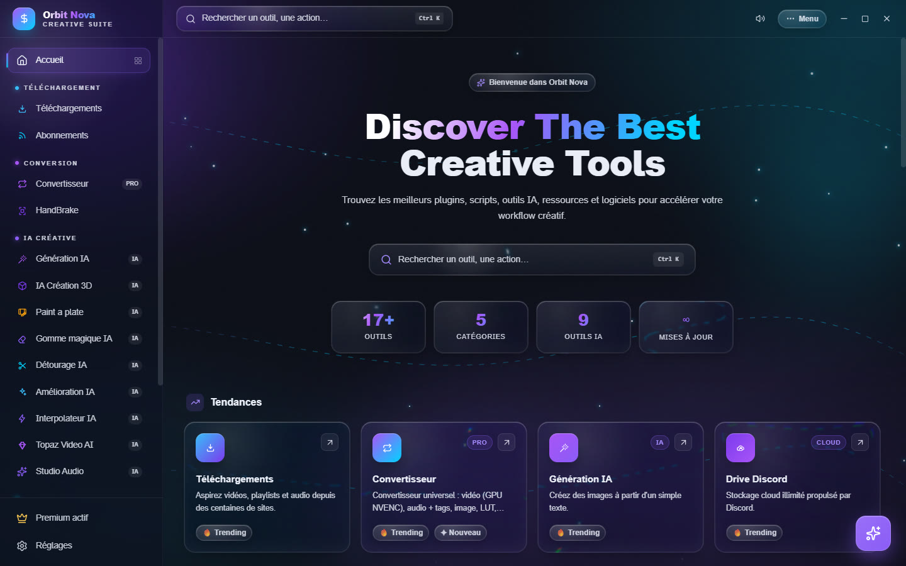
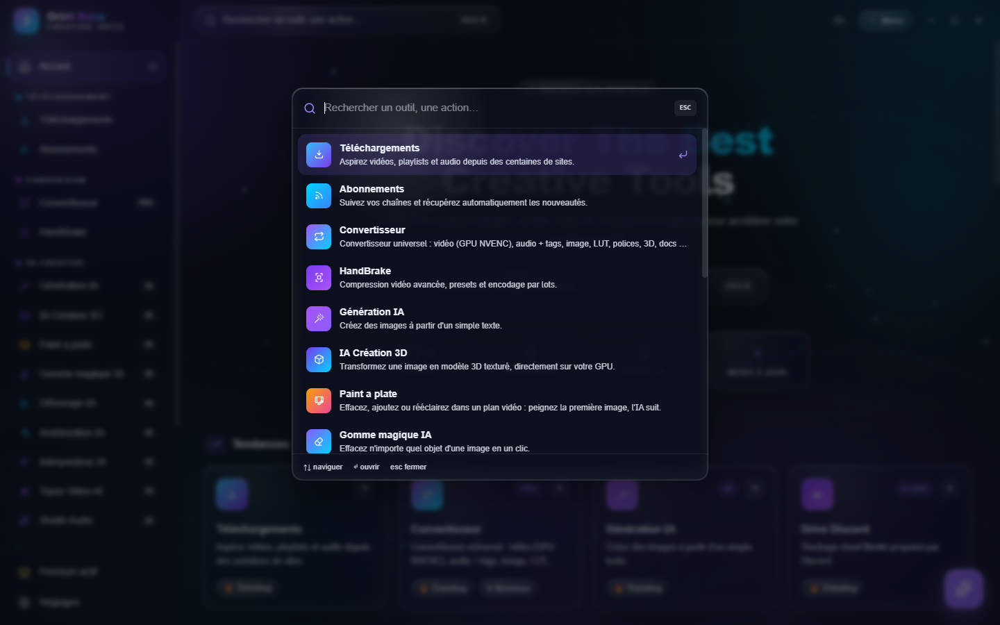
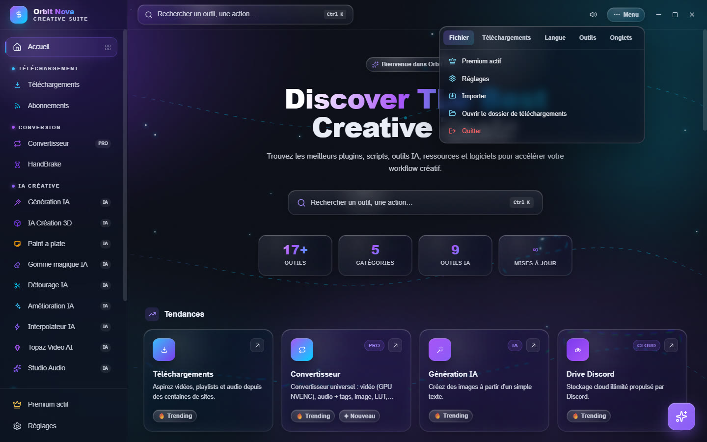
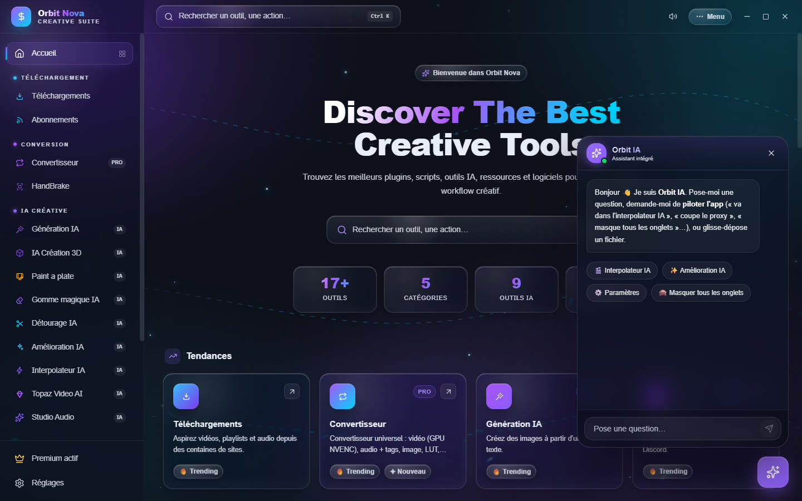

L'interface
L'accueil
L'accueil présente tous les outils, rangés en cinq catégories : Téléchargement, Conversion, IA Créative, Studio & Outils et Cloud. Les rangées Tendances et Nouveautés mettent en avant les outils les plus utilisés et les derniers ajoutés. Cliquez sur une carte pour ouvrir l'outil.


La barre latérale, à gauche, reste visible partout : elle liste les outils par catégorie, avec en bas Premium (l'état de votre licence) et Réglages. Sur une petite fenêtre, elle se replie : le bouton menu en haut à gauche l'ouvre.
La recherche (Ctrl+K)
Appuyez sur Ctrl+K n'importe où, ou cliquez sur Rechercher un outil, une action… en haut : tapez quelques lettres, puis Entrée pour ouvrir l'outil. La recherche trouve aussi les outils que vous avez masqués.


Le Menu
Le bouton Menu, en haut à droite, regroupe les commandes générales :
- Fichier : Premium, Réglages, Importer (une liste de liens), ouvrir le dossier de téléchargements, Quitter ;
- Téléchargements : tout mettre en pause, tout reprendre, redémarrer les échecs, effacer les terminés, tout annuler ;
- Langue : français, anglais, espagnol, allemand, italien, portugais ;
- Outils : ouvrir le dossier d'Orbit, réinstaller ou mettre à jour yt-dlp, journal des modifications, sauvegarder et restaurer les abonnements, Assistant IA ;
- l'affichage des onglets : cochez ou décochez les outils à montrer dans la barre latérale.


À côté, l'icône de haut-parleur coupe ou remet les petits sons de l'interface.
L'assistant IA
Le bouton rond en bas à droite ouvre Orbit IA, un assistant qui connaît l'application. Demandez-lui en français ce que vous voulez faire (« compresse cette vidéo pour Discord », « où régler la qualité ? ») : il répond, ouvre le bon outil ou change un réglage pour vous. Vous pouvez aussi lui glisser un fichier.


L'assistant utilise une IA locale gratuite (environ 2 Go, téléchargée une fois, fonctionne hors connexion) ou, si vous ajoutez votre propre clé, Claude d'Anthropic : Réglages › IA & Performance › Assistant IA.
Le centre de tâches
Les traitements longs (conversions, rendus IA, encodages) apparaissent dans le centre de tâches avec leur progression, même quand vous changez d'onglet. Les outils IA qui utilisent la carte graphique passent un par un : un travail qui attend affiche En attente d'un créneau GPU… (réglable dans Réglages › Téléchargements › Jobs IA simultanés (GPU)).
Glisser-déposer
Presque tous les outils acceptent les fichiers glissés depuis l'Explorateur Windows, un par un ou plusieurs d'un coup. Vous pouvez aussi ajouter Orbit au clic droit de l'Explorateur (Réglages › Téléchargements › Menu clic droit Windows) pour compresser ou recadrer un fichier sans ouvrir l'application.